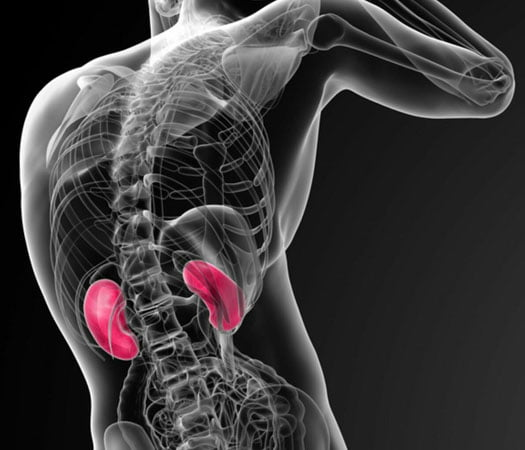

ООО "Альтернатива" - технический организатор медицинских онлайн-конференций в Нижнем Новгороде

...болезнь не может приспосабливаться к знаниям и опыту врача,
Парацельс, XV век
напротив,
это врач должен постоянно учиться и совершенствоваться.
Приглашаем принять участие в работе научно-практических конференций:
-
Подробнее о конференции Сложное целое: мать и дитя. Пациент с врожденными пороками развития почек и мочевыводящих путей
«Сложное целое: мать и дитя. Пациент с врожденными пороками развития почек и мочевыводящих путей»
Участники конференции рассмотрят актуальные вопросы неонатальной нефрологии как одной из самых сложных в диагностике и лечении: особенности диагностики врожденных и наследственных заболеваний почек у детей, современные подходы к терапевтическому лечению, в том числе при инфекции мочевыводящей системы (МВС) у детей разного возраста и хронической болезни почек, вопросы заместительной почечной терапии, оперативной коррекции, а также диспансерного наблюдения, вакцинации и проведения реабилитационных мероприятий у детей при врожденных пороках развития МВС.
-
Подробнее о конференции Здоровье и качество жизни возрастных пациентов
«Здоровье и качество жизни возрастных пациентов»
В ходе конференции планируется обсуждение основных проблем гериатрии, расширение знаний врачей по возраст-ассоциированным заболеваниям: сердечно-сосудистым, метаболическим нарушениям, старческой астении, хронической анемии и другим гериатрическим синдромам, обмен опытом, обобщение и использование современной научной информации в области геронтологии и гериатрии в клинической практике.
-
 Подробнее о конференции Остеопороз — болезнь современной цивилизации
Подробнее о конференции Остеопороз — болезнь современной цивилизации«Остеопороз — болезнь современной цивилизации»
Участие в мероприятии позволит врачам разных специальностей повысить настороженность в отношении наличия остеопороза у обследуемых пациентов в соответствии с имеющимися у них факторами риска заболевания, диагностировать остеопороз по результатам рентгеновской денситометрии, рекомендовать адекватную диетотерапию, акцентировать работу по профилактике остеопороза и предупреждению повторных переломов с целью повышения продолжительности жизни, продления активного долголетия, улучшения качества жизни пожилых людей.
Прошедшие конференции:
-
 Подробнее о конференции Сложное целое мать и дитя
Подробнее о конференции Сложное целое мать и дитя«Сложное целое: мать и дитя. Врожденные пороки сердца (ВПС)»
Участники конференции познакомятся с актуальной проблемой детской кардиологии: врожденными пороками сердца (ВПС). Будут рассмотрены особенности диагностики, клинические проявления ВПС, возможности оперативного и медикаментозного лечения и реабилитации при этих состояниях.
-
 Подробнее о конференции Остеопороз на клинических примерах
Подробнее о конференции Остеопороз на клинических примерах«Остеопороз на клинических примерах»
На клинических примерах будут представлены алгоритмы диагностики и лечения пациентов с остеопорозом различной степени тяжести, причины инвалидизации, наиболее эффективные методы комплексной реабилитации пациентов после перенесенных переломов.
-
 Подробнее о конференции Формула активного долголетия
Подробнее о конференции Формула активного долголетия«Формула активного долголетия»
Участники конференции расширят свои знания по вопросу коморбидности у пожилых пациентов, получат новые сведения об особенностях течения коронавирусной инфекции у пожилых, особенно с синдромом старческой астении; получат рекомендации по обучению пожилых пациентов основам активного долголетия, расширят свои знания по таким возраст-ассоциированным заболеваниям, как патология опорно-двигательного аппарата и остеопороз.